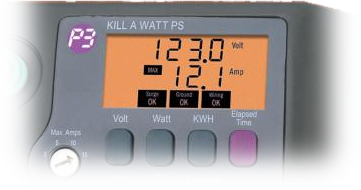

Kill-A-Watt Electric Usage Monitor Power Strip was created to help you to find out what your devices are actually costing you

⇨ Kill-A-Watt, a play on words of KiloWatt
⇨ Simply plug it with your equipment
⇨ And press the different buttons to switch between different measures
⤷It can displays Max/Min Volts, Amps, Watts, Power Factor & Leakage Current
⇨ Easy to install
⇨ Can measure multiple devices at once
⇨ Help you to reduce your electricity bill
⇨ Costly ($100)
⇨ Without international plugs
⇨ Not profitable in any case
⇨ Help you to find which of your devices are greedy in electricity
⤷ and save energy
⇨ Really useful for comparing multiple devices
⇨ The other models have only one output
⤷ The other models are cheaper ($20 < $100)
This presentation was created with impress.js